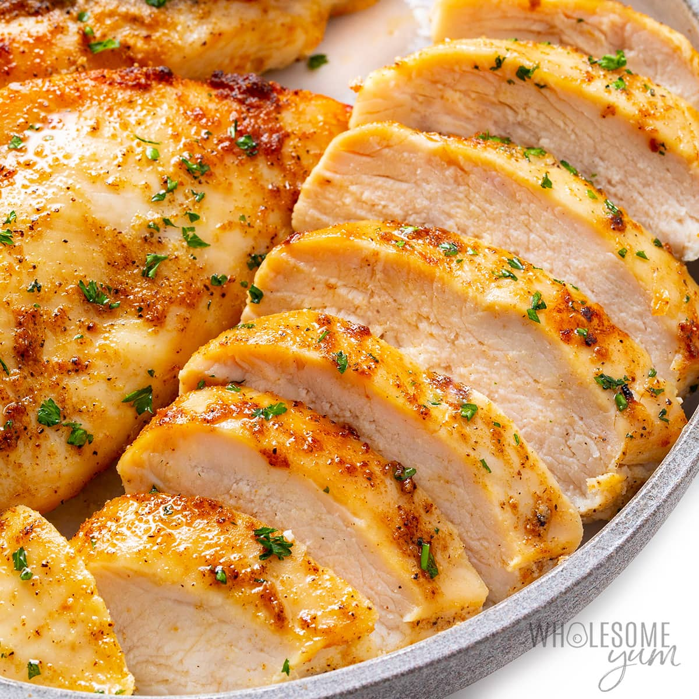

Chicken Breast Recipe

The perfect Chicken Breast
Chicken breast is one of the most common dishes prepared in the kitchen. Yet it is also very difficult to get right!
This recipe will show you the best way to cook chicken breast to get the most flavour and moisture out of it.
-----------------------------------------------------------------------------------------------------
Ingredients:
- Chicken breast
- Salt and pepper/li>
- Olive oil
- Butter
- Garlic
- Thyme
-----------------------------------------------------------------------------------------------------
Steps:
- Remove the chicken from the fridge and allow them to come to room temperature.
- Season well with salt and pepper.
- Place a non-stick pan on high heat and add olive oil.
- Place the chicken breast skin-side down into the pan
- Dump the garlic and thyme on top of the chicken and lower the heat to medium.
- Sear for 5 minutes and then flip it and sear for 5 minutes.
- Add 3 tablespoons butter. As the butter melts, carefully and continuously spoon it over the chicken breast, basting for 3 minutes.
- Flip and baste for 3 minutes.
- Transfer the chicken into a plate and let it rest for 5 minutes.